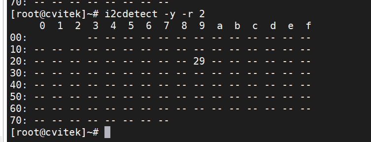
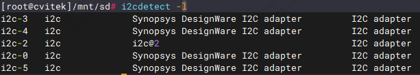

5. I2C Operation Guide¶
This documentDescriptionin CV184x on the platformUse I2C Bus Read/writeOperation、RateConfiguration、GPIO I2C、 Recovery FunctionwithandKernel space/User space ofCompleteFlow。
5.1. Preparation¶
Use I2C The following conditions must be met first：
Use ofSDKBuildafterkernelImage（DefaultalreadyInclude I2C RelatedDriver）。
Configuration FilePathusually build/boards/cv184x/Board Name/linux/Board Name_defconfig 。
CONFIG_I2C_CHARDEV=y
CONFIG_I2C_DESIGNWARE_PLATFORM=y
5.1.1. Pin（willPin Multiplexingto I2C Function）¶
If I2C Useof SCL/SDA Pin before Function，need to I2C Function。followingwith I2C2 as an example。
1. View I2C2_SCL Pin beforeFunction
cvi_pinmux -r IIC2_SCL
# Output beforeFunction，for example：PWR_GPIO_12（PleasewithActualOutputis ）
2. willPinFunctionSettingsis IIC2_SCL
cvi_pinmux -w IIC2_SCL/IIC2_SCL
# IndicateswillPinFunctionSettingsis IIC2_SCL
3. Modify I2C2_SDA Pin
Method IIC2_SDA Execute cvi_pinmux -r IIC2_SDA Viewafter， Use
cvi_pinmux -w IIC2_SDA/IIC2_SDA to I2C Function。
5.2. Operation Procedure¶
System Default I2C RelatedModulealready Kernel，No need to LoadModule；System after canUse I2C。
I2C Read/write inSerial Portor SSH TerminalinExecuteunder inof i2c-tools Commands，orinKernel space/User space Program， in I2C BusonoffromDevice Read/write。
5.3. InterfaceRateSettingsDescription¶
I2C BusRate Device Treeinof clock-frequency ，Unitis Hz。ModifyafterneedRebuildKernel。
DesignWare I2C Driver Supportfollowing 4 Rate，Settings Value I2C ControllerInitializeFailure：
Mode |
clock-frequency Value |
Description |
|---|---|---|
Standard Mode |
|
100 kHz， Mode |
Fast Mode |
|
400 kHz， Mode（Default） |
Fast Mode Plus |
|
1 MHz， Mode+ |
High Speed Mode |
|
3.4 MHz， Mode（ beforeDevicenotSupport） |
Note
High Speed Mode Need to IP Support，CV184x before Support Fast Mode，Driver Fast Mode。
Frequency PCB 、on Value、Bus etc. ， Confirm 。
Modify ： File build/boards/default/dts/cv184x/cv184x_base.dtsi；IfUse ， Modify Board-level DTS in of Nodeor Attribute。
Example： will i2c0 Rate is 400kHz
i2c0: i2c@04000000 {
compatible = "snps,designware-i2c";
clocks = <&clk CV184X_CLK_I2C>;
reg = <0x0 0x04000000 0x0 0x1000>;
clock-frequency = <400000>;
#size-cells = <0x0>;
#address-cells = <0x1>;
resets = <&rst RST_I2C0>;
reset-names = "i2c0";
};
5.4. I2C Read/Write Command Example (i2c-tools)¶
followingCommandsin Linux TerminalinExecute，needalreadyInstall i2c-tools。cv184x Platform Bus is i2c-0～i2c-4。
1. Systeminof I2C Bus
i2cdetect -l
2. Scan BusonoffromDeviceAddress
i2cdetect -y -r N
# N isBus ，for exampleScan i2c-2：
i2cdetect -y -r 2
# Scan i2c-3：
i2cdetect -y -r 3
# Scan i2c-4：
i2cdetect -y -r 4
# Scan i2c-5：
i2cdetect -y -r 5
{kind=link}

3. ReadfromDeviceRegister（with 8 RegisterAddressas an example）
i2cdump -f -y N M
# N：Bus ；M：fromDevice 7 Address（ ，can 0x before ）
# Example：Read i2c-2 onAddress 0x50 ofDeviceof Register
i2cdump -f -y 2 0x50
4. Read Register
i2cget -f -y 0 0x3c 0x00
# from i2c-0 onAddress 0x3c ofDeviceReadRegister 0x00 ofValue
5. Write Register
i2cset -f -y 0 0x3c 0x40 0x12
# i2c-0 onAddress 0x3c ofDeviceofRegister 0x40 WriteData 0x12
5.5. GPIO Simulate I2C (using I2C-2 as an example)¶
I2C2 orneed GPIO I2C ，canUseKernelof i2c-gpio Driver。
followingExamplewill I2C Bus 2 Configurationis GPIO 。
Steps 1：ModifyDevice Tree
inBoard-levelKernel ConfigurationFileinEnsurefollowingOptionalready 。Configuration FilePathusually build/boards/cv184x/Board Name/linux/Board Name_defconfig 。
CONFIG_I2C_GPIO=y
EditBoard-level DTS File，Pathusually build/boards/cv184x/Board Name/dts_arm/Board Name.dts ， in”Board Name”ReplaceisActual Name， with SDK is 。
Disable I2C2 Node，andAdd GPIO I2C Node， for exampleunder。can PinActual can GPIO is SCL/SDA I2C（need Pinin pinmux incanConfigurationis GPIO ）。
/dts-v1/;
#include "cv184x_base_arm.dtsi"
#include "cv184x_asic_bga.dtsi"
#include "cv184x_asic_spinor.dtsi"
#include "cv184x_default_memmap.dtsi"
&i2c2 {
status = "disabled";
scl-gpios = <0>;
sda-gpios = <0>;
};
/ {
sysdma_remap {
ch-remap = <CVI_I2S0_RX CVI_I2S2_TX CVI_SPI1_RX CVI_SPI1_TX
CVI_SPI_NOR_RX CVI_SPI_NOR_TX CVI_I2S2_RX CVI_I2S3_TX>;
};
aliases {
i2c2 = &i2c2_gpio;
};
i2c2_gpio: i2c@2 {
compatible = "i2c-gpio";
i2c-gpio,delay-us = <25>; /* 20kHz， */
gpios = <&porte 13 (GPIO_ACTIVE_HIGH | GPIO_OPEN_DRAIN)>,
<&porte 12 (GPIO_ACTIVE_HIGH | GPIO_OPEN_DRAIN)>;
i2c-gpio,sda-open-drain;
i2c-gpio,scl-open-drain;
#address-cells = <1>;
#size-cells = <0>;
status = "okay";
linux,init-delay = <200>; /* on 200ms， and */
};
};
Description： GPIO Pin（If porte 12/13）need ActualSchematicModifyis before Useof SDA/SCL Pin。 in porte can GPIO inof is porta、portb、portc、portd or porte，Pin is 0～31。IfnotNeed to is i2c-2，can aliases ， Kernel Bus ，from Implementation to Bus（If i2c-4、i2c-5 etc.）。
Steps 2：Verification GPIO I2C-2
RebuildandBurningKernelafter，inTerminalExecute：
I2C Bus，Confirm in
i2c-2：i2cdetect -l

Scan i2c-2 onofDevice：
i2cdetect -y 2
Writeand Data（ExampleAddress 0x50）：
i2cset -y 2 0x50 0x00 0xAA i2cget -y 2 0x50 0x00 # Output 0xaa
{kind=link}
5.6. I2C Recovery Configuration Description¶
I2C Bus （IffromDevice SDA notRelease） ，canThrough I2C Recovery Function Kernel in toTimeoutafterSwitch to GPIO Mode ， Bus。 FunctioninDefaultDevice Treeincan or Enable，Need to inBoard-level DTS inConfiguration。
Steps：
EditBoard-levelDevice Tree Enable：
build/boards/cv184x/board_name/dts_arm/board_name.dts（will board_name ReplaceisActual Name）。is I2C NodeAdd Recovery RelatedAttribute inNeed to Recovery of
&i2cNin the nodescl-pinmux、sda-pinmux、scl-gpios、sda-gpios， Kernelin Recovery Through GPIO Driver SCL/SDA。RebuildKernel DTS afterRebuildKernel/Device TreeandBurning， Configuration 。
I2C Controller Recovery ConfigurationExample（ Refer to，Please ActualUseof SCL/SDA PinModify）：
I2C0：
&i2c0 {
scl-pinmux = <0x03001070 0x0 0x3>; /* IIC0_SCL → XGPIOA[28] */
sda-pinmux = <0x03001074 0x0 0x3>; /* IIC0_SDA → XGPIOA[29] */
scl-gpios = <&porta 28 GPIO_ACTIVE_HIGH>;
sda-gpios = <&porta 29 GPIO_ACTIVE_HIGH>;
};
I2C1：
&i2c1 {
scl-pinmux = <0x0300111c 0x2 0x3>; /* IIC1_SCL → XGPIOB[7] */
sda-pinmux = <0x03001118 0x2 0x3>; /* IIC1_SDA → XGPIOB[8] */
scl-gpios = <&portb 7 GPIO_ACTIVE_HIGH>;
sda-gpios = <&portb 8 GPIO_ACTIVE_HIGH>;
};
I2C2：
&i2c2 {
scl-pinmux = <0x030010b8 0x0 0x3>; /* IIC2_SCL → XPWR_GPIO[12] */
sda-pinmux = <0x030011bc 0x0 0x3>; /* IIC2_SDA → XPWR_GPIO[13] */
scl-gpios = <&porte 12 GPIO_ACTIVE_HIGH>;
sda-gpios = <&porte 13 GPIO_ACTIVE_HIGH>;
};
I2C3：
&i2c3 {
scl-pinmux = <0x03001014 0x0 0x3>; /* IIC3_SCL → XGPIOA[5] */
sda-pinmux = <0x03001018 0x0 0x3>; /* IIC3_SDA → XGPIOA[6] */
scl-gpios = <&porta 5 GPIO_ACTIVE_HIGH>;
sda-gpios = <&porta 6 GPIO_ACTIVE_HIGH>;
};
I2C4：
&i2c4 {
scl-pinmux = <0x030010f0 0x2 0x3>; /* IIC4_SCL → XGPIOB[1] */
sda-pinmux = <0x030010f4 0x2 0x3>; /* IIC4_SDA → XGPIOB[2] */
scl-gpios = <&portb 1 GPIO_ACTIVE_HIGH>;
sda-gpios = <&portb 2 GPIO_ACTIVE_HIGH>;
};
Parameter description:
scl-pinmuxandsda-pinmux: DefinitionSCLandSDAPinof Configuration：Pin MultiplexingRegisterAddress
：I2CFunctionSelectValue
：GPIOFunctionSelectValue
scl-gpiosandsda-gpios: Definitionrecovery UseofGPIOPin：
<&gpio_port pin_number polarity>GPIO_ACTIVE_HIGHIndicates Valid
Note
I2C recoveryFunctionafter， toBus ，System toGPIOMode Bus
in toI2CBus Need to Function
ModifyDevice TreeafterNeed toRebuildKernel
5.7. Kernel space I2C Read/writeProgramExample¶
following inKernelDriverinThrough I2C SystemAccessfromDeviceof FlowandCompleteExampleCode。
FlowOverview：
Use
i2c_get_adapter(bus_id)Get I2C 。Use
i2c_new_client_device()inBuson Device （5.10 Kernel ，Failure ReturnERR_PTR； canUsei2c_new_probed_deviceetc.）。Use
i2c_master_send/i2c_master_recvRead/write；Use afteri2c_unregister_device、i2c_put_adapter。
CompleteKernelModuleExample（ File、Initialize、Write register、Read register、Module ）：
1#include <linux/module.h>
2#include <linux/i2c.h>
3#include <linux/err.h>
4#include <linux/errno.h>
5#include <linux/kernel.h>
6
7/* DeviceAddressneedandActualfromDevice ；Bus i2c-0, i2c-1, ... */
8#define I2C_DEV_ADDR 0x3c
9#define I2C_BUS_NUM 0
10
11static struct i2c_client *client;
12
13/* Write register：buf[0]=RegisterAddress，buf[1]=Data */
14static int __used i2c_dev_write(u8 reg, u8 value)
15{
16 u8 buf[2] = { reg, value };
17 int ret = i2c_master_send(client, buf, sizeof(buf));
18 if (ret < 0)
19 pr_err("Write failed: %d\n", ret);
20 return ret;
21}
22
23/* Read register： RegisterAddress， 1 Bytes */
24static int __used i2c_dev_read(u8 reg, u8 *out_val)
25{
26 int ret;
27
28 ret = i2c_master_send(client, ®, 1);
29 if (ret < 0) {
30 pr_err("Register select failed: %d\n", ret);
31 return ret;
32 }
33
34 ret = i2c_master_recv(client, out_val, 1);
35 if (ret < 0)
36 pr_err("Read failed: %d\n", ret);
37 return ret;
38}
39
40static int __init cvi_i2c_dev_init(void)
41{
42 struct i2c_adapter *adapter;
43 struct i2c_board_info info = {
44 I2C_BOARD_INFO("dummy", I2C_DEV_ADDR),
45 };
46
47 adapter = i2c_get_adapter(I2C_BUS_NUM);
48 if (!adapter) {
49 pr_err("I2C adapter not found\n");
50 return -ENODEV;
51 }
52
53 /* 5.10 KernelUse i2c_new_client_device，Failure Return ERR_PTR */
54 client = i2c_new_client_device(adapter, &info);
55 i2c_put_adapter(adapter);
56
57 if (IS_ERR(client)) {
58 pr_err("Device registration failed: %ld\n", PTR_ERR(client));
59 return PTR_ERR(client);
60 }
61
62 pr_info("I2C device initialized\n");
63 return 0;
64}
65
66static void __exit cvi_i2c_dev_exit(void)
67{
68 i2c_unregister_device(client);
69 pr_info("I2C device removed\n");
70}
71
72module_init(cvi_i2c_dev_init);
73module_exit(cvi_i2c_dev_exit);
74
75MODULE_LICENSE("GPL");
76MODULE_DESCRIPTION("CVI I2C device driver - kernel I2C read/write example");
77MODULE_AUTHOR("Your Name");
5.8. User-Space I2C Read/Write Program Example¶
following inUser Through /dev/i2c-N and ioctl(I2C_SLAVE / I2C_RDWR) Access I2C Device。
Note
Kernelneed
CONFIG_I2C_CHARDEV，andEnsure beforeUser Access/dev/i2c-*。
CompleteUser-Space Program Example（ File、Write register、Read registerand I2C_M_RD ）：
1/*
2 * User space I2C Read/writeExample：Through /dev/i2c-N and ioctl(I2C_SLAVE / I2C_RDWR) Access I2C Device。
3 * needKernel CONFIG_I2C_CHARDEV， beforeUser Access /dev/i2c-*。
4 */
5#include <stdio.h>
6#include <stdlib.h>
7#include <fcntl.h>
8#include <unistd.h>
9#include <stdint.h>
10#include <linux/i2c-dev.h>
11#include <sys/ioctl.h>
12
13#if defined(__has_include) && __has_include(<linux/i2c.h>)
14# include <linux/i2c.h>
15#else
16/* Tools linux/i2c.h ProvideandKernel ABI of Definition */
17# ifndef I2C_M_RD
18# define I2C_M_RD 0x0001
19# endif
20struct i2c_msg {
21 uint16_t addr;
22 uint16_t flags;
23 uint16_t len;
24 uint8_t *buf;
25};
26#endif
27
28#define I2C_DEV_PATH "/dev/i2c-0"
29#define I2C_SLAVE_ADDR 0x3C /* 7 fromDeviceAddress */
30
31/* Write register： RegisterAddress， Data */
32static int i2c_write_reg(int fd, uint8_t reg, uint8_t value)
33{
34 uint8_t buf[2] = { reg, value };
35
36 if (write(fd, buf, sizeof(buf)) != (ssize_t)sizeof(buf)) {
37 perror("Write failed");
38 return -1;
39 }
40 return 0;
41}
42
43/* Read register： Write registerAddress， Data（Use I2C_RDWR is ） */
44static int i2c_read_reg(int fd, uint8_t reg_addr, uint8_t *data)
45{
46 struct i2c_msg messages[2];
47 struct i2c_rdwr_ioctl_data packet;
48
49 messages[0].addr = I2C_SLAVE_ADDR;
50 messages[0].flags = 0; /* */
51 messages[0].len = 1;
52 messages[0].buf = ®_addr;
53
54 messages[1].addr = I2C_SLAVE_ADDR;
55 messages[1].flags = I2C_M_RD; /* */
56 messages[1].len = 1;
57 messages[1].buf = data;
58
59 packet.msgs = messages;
60 packet.nmsgs = 2;
61
62 if (ioctl(fd, I2C_RDWR, &packet) < 0) {
63 perror("Read failed");
64 return -1;
65 }
66 return 0;
67}
68
69int main(void)
70{
71 int i2c_fd;
72 uint8_t reg = 0x00;
73 uint8_t value = 0x55;
74 uint8_t data = 0;
75
76 /* Steps 1：Enable I2C BusDeviceandSettingsfromDeviceAddress */
77 i2c_fd = open(I2C_DEV_PATH, O_RDWR);
78 if (i2c_fd < 0) {
79 perror("Failed to open I2C device");
80 return EXIT_FAILURE;
81 }
82
83 if (ioctl(i2c_fd, I2C_SLAVE, I2C_SLAVE_ADDR) < 0) {
84 perror("Failed to set slave address");
85 close(i2c_fd);
86 return EXIT_FAILURE;
87 }
88
89 /* Steps 2：WriteRegister */
90 if (i2c_write_reg(i2c_fd, reg, value) < 0) {
91 close(i2c_fd);
92 return EXIT_FAILURE;
93 }
94
95 /* Steps 3：ReadRegister */
96 if (i2c_read_reg(i2c_fd, reg, &data) < 0) {
97 close(i2c_fd);
98 return EXIT_FAILURE;
99 }
100
101 printf("Read value: 0x%02X\n", data);
102
103 close(i2c_fd);
104 return EXIT_SUCCESS;
105}